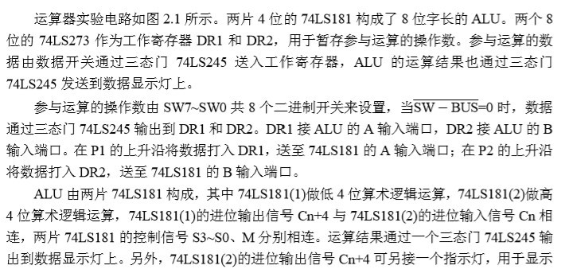
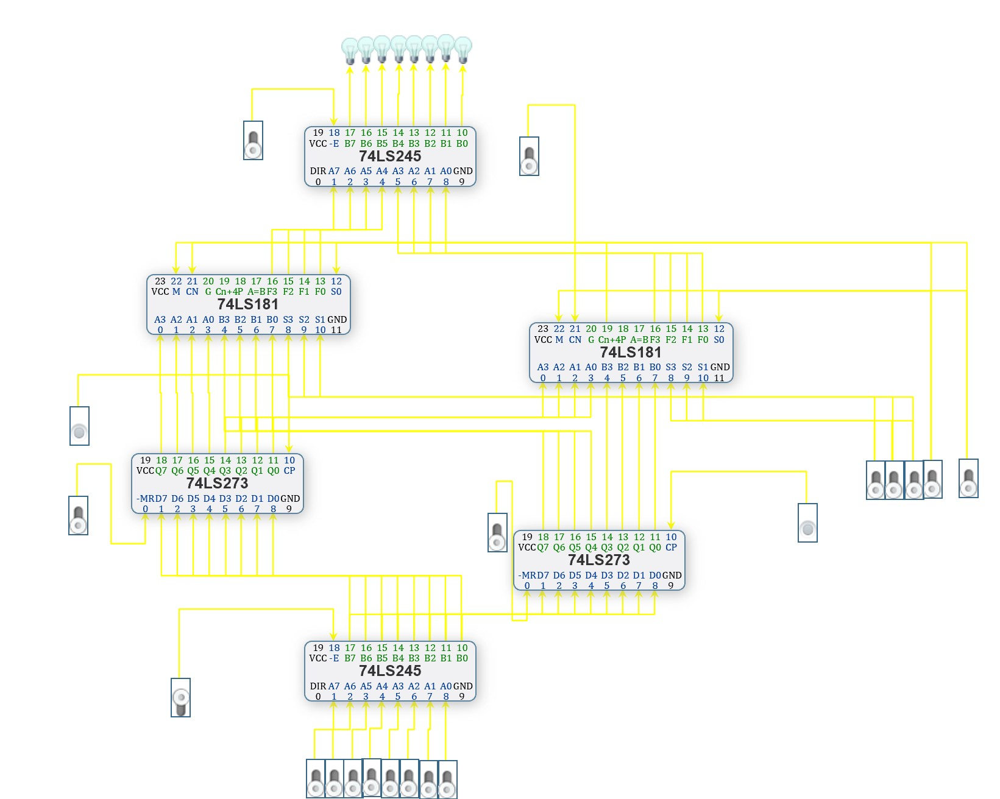
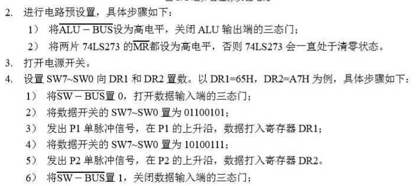
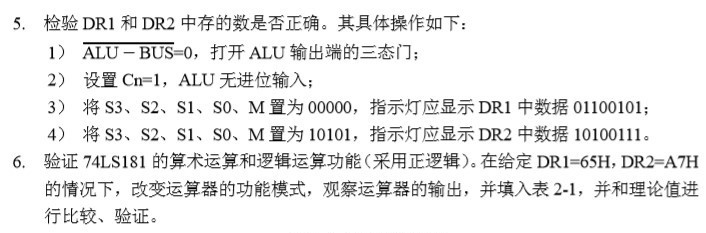
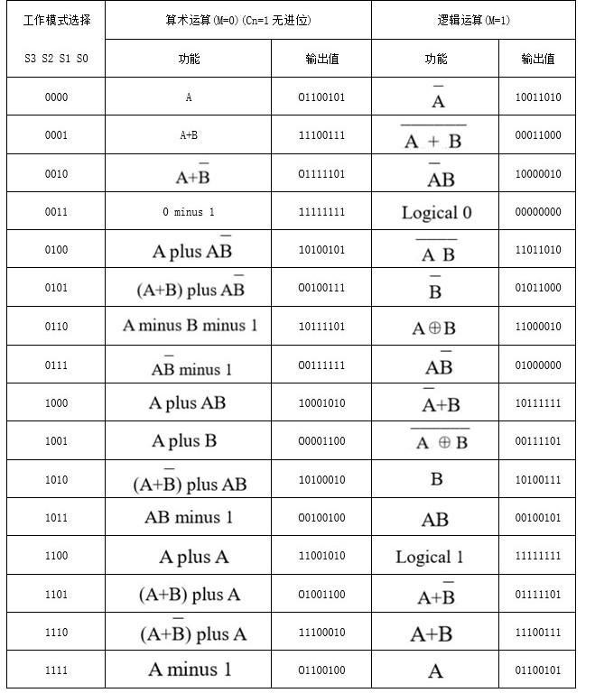

由于疫情原因这次课设是基于多思计算机组成原理网络虚拟实验系统实现的。
课程设计要求
1） 做好实验预习，看懂电路图，熟悉实验中所用芯片各引脚的功能和连接方法。
2） 按照实验内容与步骤的要求，认真仔细地完成实验。
3） 写出实验报告。
设计原理

实验步骤和内容
1、搭建实验电路
图1-1 运算器虚拟实验电路


表1-1 运算器功能验证
总结
1、运算器主要由哪些器件组成？这些器件是怎样连接的？
答：本实验用到的主要数字功能器件有：两个4 位算术逻辑运算单元 74LS181，两个8 位数据锁存器 74LS273，两个三态输出的 8 组总线收发器 74LS245，若干个单脉冲、开关、数据显示灯。
两片 4 位的 74LS181 构成了 8 位字长的 ALU。两个 8 位的 74LS273 作为工作寄存器 DR1 和 DR2，用于暂存参与运算的操作数。参与运算的数据由数据开关通过三态门 74LS245 送入工作寄存器，两个寄存器将低四位和高四位数据分别送到两个ALU进行运算，ALU 的运算结果也通过三态门 74LS245 发送到数据显示灯上。
2、芯片 74LS181 没有减法：A minus B 的指令，怎样实现减法功能？
答：转化为A+（B的补码）
3、74LS181 有哪两种级联方法？分别要用到哪些引脚？哪一种速度更快？
答：串联和并联。并联速度较快。
串联，即串行进位，也就是本实验中的连接方式，需要用到 8个数据输入端（A0、A1、A2、A3，B0、B1、B2、B3），4个运算类型控制端（S0、S1、S2、S3）， CN端（处理进入芯片前进位值），M端（控制芯片的运算方式），4个二进制输出端（F0、F1、F2、F3），Cn+4端（记录运算后的进位）。并且低位运算单元的Cn+4端连到高位运算单元的CN端。
并联，即超前进位，需要用到8个数据输入端（A0、A1、A2、A3，B0、B1、B2、B3）、4个运算类型控制端（S0、S1、S2、S3）， CN端（处理进入芯片前进位值），M端（控制芯片的运算方式），4个二进制输出端（F0、F1、F2、F3）， Cn+4端（记录运算后的进位），G（进位产生输出端），P（进位传输输出端）。
欢迎交流~